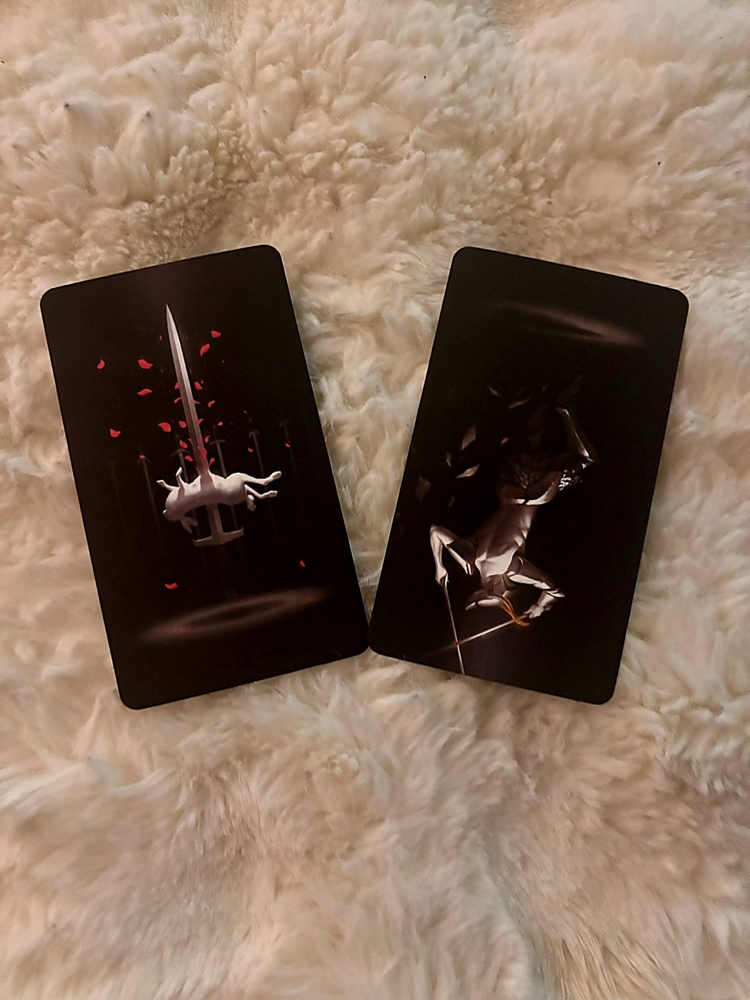
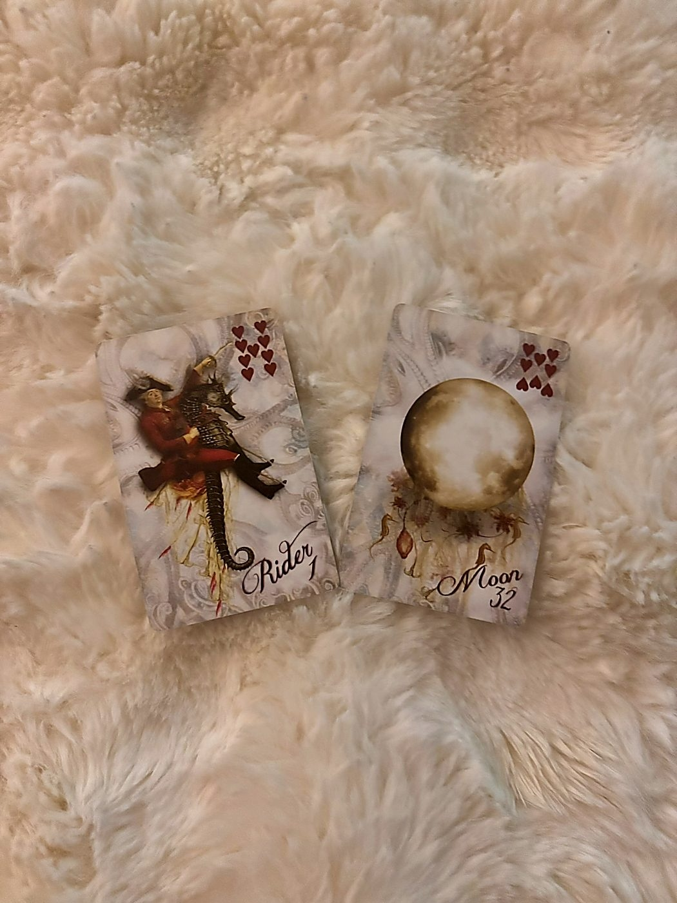
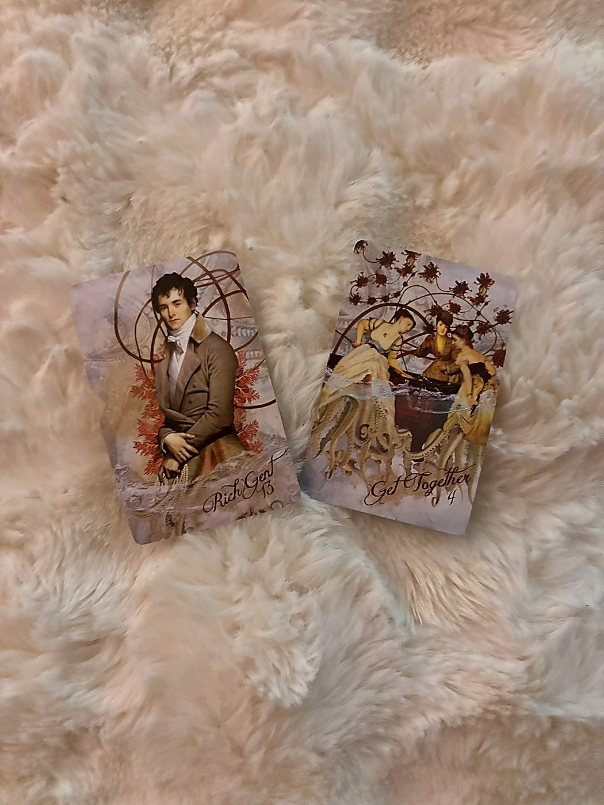
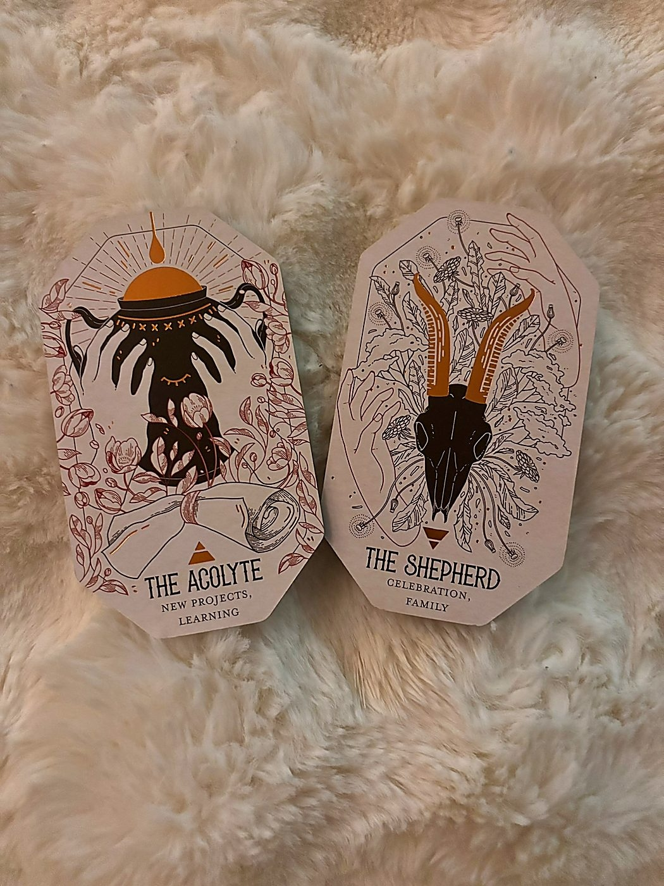
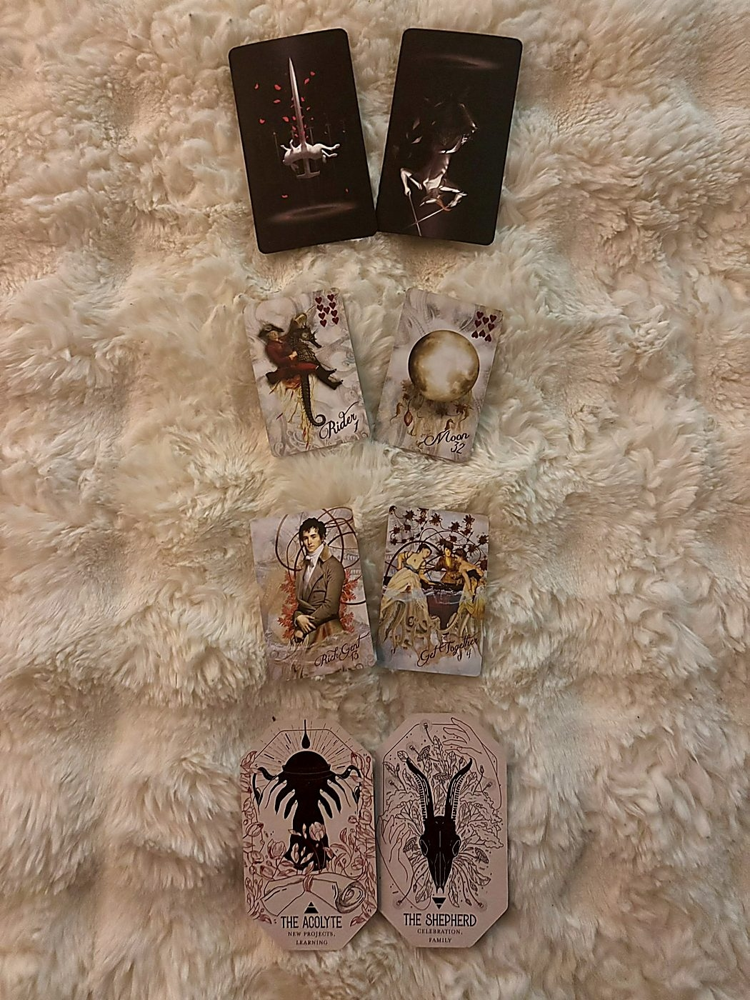

The Swords You Carry
positions 1 & 5 · trueblack tarot · the theme & the soul lesson

Seven of Swords — The Strategic Retreat
Naomi. Girl. The TrueBlack deck — you know this one, all those figures rising out of pitch darkness like ghosts caught mid-confession — and it handed you the Seven of Swords as your theme for the entire month. And you channeled "Horseshoe" by Tate McRae. I need you to sit with that for a second because the universe is not being subtle.
The Seven of Swords is the card of moving quietly, strategically, sometimes deceptively, away from a situation. It's the person sneaking out of camp with an armful of stolen blades. But here's the thing people miss about this card: sometimes those swords are yours. Sometimes you're not stealing, you're reclaiming. You're taking back your energy, your attention, your plans, and you're doing it without announcing it to the whole room because you know damn well the room would have opinions.
May's theme is about what you're choosing to carry and what you're choosing to leave behind, and the fact that you might not be fully transparent about the process. That's not necessarily shady. It might just be survival. You're in the suit of swords right now, which means this is all happening in the mind first: the calculations, the cost-benefit analysis, the quiet decisions made at 2 AM. The full moon in Scorpio on May 1st already cracked open whatever buried truth kicked this off. You're not wondering if you need to make a move. You're figuring out how.
May is not the month of grand announcements. It's the month of quiet, deliberate repositioning. You know more than you're saying, and that's by design.
Knight of Swords Reversed — Slow the Charge
The Knight of Swords reversed as your soul lesson is the universe putting a hand on your chest and saying I know you want to sprint, but you cannot sprint your way out of this one.
Upright, this Knight is pure velocity: sharp mind, sharp tongue, charging into conflict with total conviction. Reversed, that energy turns inward and eats itself. It becomes the impulse to lash out before thinking, to fire off the text, to make the cutting remark that feels righteous in the moment and hollow by morning. It's the version of you that weaponizes your own intelligence because slowing down feels like losing.
The growth edge this month is learning to hold the sword without swinging it. You are being asked, spiritually, to recognize the difference between strategic silence (which the Seven of Swords already tells you you're capable of) and reactive aggression (which this reversed Knight wants to pull you toward). One is power. The other is just noise that makes you feel powerful for about forty-five seconds.
With Pluto stationing retrograde on May 6th, there's a real temptation to go scorched earth on something, someone, some dynamic that has quietly been pissing you off for longer than you've admitted. The soul lesson is: you can absolutely address it. But not at the speed this Knight wants you to. Not with the blade already mid-swing.
The sharpest thing you can do this month is choose when NOT to cut. That restraint is the lesson.
What Shifts in the World
positions 3 & 7 · sirens' song lenormand · releasing & invitation

Rider — The News Cycle Ends
The Rider (1) is the fastest card in the Lenormand, the swift messenger, the incoming energy, the thing that shows up at your door unannounced. And it's in the releasing position, which means: a pattern of constant incoming information, updates, or someone else's urgency dictating your pace is finally completing its cycle.
Think about what has been arriving at you all spring. The notifications, the check-ins, the "just wanted to let you know" messages that kept you in a state of low-grade alertness. The Rider releasing means you stop being reactive to every new piece of intel. The dispatch window is closing. Whatever news was coming, it has come. Whatever was "on its way," it's either here now or it's not arriving.
This is directly connected to the Seven of Swords theme: you've been in information-gathering mode, and May is when you stop gathering and start moving on what you know. The Rider leaves, and you're no longer waiting for one more update before you act.
You have enough information. The last message has landed. Now it's your move.
Moon — Recognition in the Feeling
Oh, this is beautiful. The Moon (32) as your invitation from the universe. In Lenormand, the Moon is emotion, intuition, recognition, reputation, the thing that glows in the dark. It's also cycles and creative depth.
The gift being extended to you this month is permission to be guided by your emotional knowing rather than pure logic. Yes, you are in the suit of swords. Yes, this month is cerebral and strategic. But the invitation — the thing the universe is actually holding out to you — is to let your intuition lead the strategy. The Moon says your feelings are not noise, they are data. The gut reaction is the map.
There's also a recognition element here. Something you do, create, or express this month gets seen. Gets noticed. The Moon is how you appear in other people's emotional landscape. Under the blue moon closing out May on the 31st in Sagittarius, this card suggests that by month's end, someone is looking at you differently, with respect, with admiration, with the kind of attention that actually matters.
The universe is inviting you to trust what you feel as much as what you think. Your intuition is the gift. Let it drive.
What Moves Beneath
positions 4 & 8 · sirens' song kipper · the hidden current & the blue moon message

Rich Gent (#13) — The Man With Means
Naomi. The Rich Gent (#13) is operating beneath the surface of your May. This is not the Good Lord (the elder, the father figure, the authority-by-age). The Rich Gent is authority through wealth and status, a man of means, a benefactor, someone whose power comes from what he has and what he can offer.
In the Siren's Song deck, male figures face left, toward the past. So this figure is looking backward, which tells me this is someone already in your story, not a new arrival. The Rider is releasing, remember? No new messengers. This person is already here, already part of the picture, and he's operating in the background of whatever strategic repositioning you're doing this month.
The hidden current position means this influence is not obvious, maybe not even to you yet. It could be a man whose financial stability, professional connections, or material resources are quietly shaping your options. It could also be the energy of wealth and status itself, the question of who has it, who offers it, and what it costs you to accept. Given the Seven of Swords theme, ask yourself: is there a situation where someone's generosity or affluence is part of what you're navigating around? Part of what you're quietly reclaiming your independence from?
Someone's resources or status are a background factor in your decisions this month. Name that influence so it doesn't name you.
Meeting (#4) — The Reconnection
The Meeting (#4) closes your May. This is a connector card in Kipper, meaning it bridges what comes before it and what comes after, it creates a junction between two energies. As the final card in this spread, the Meeting is telling you that May ends not in isolation, not in the solitary chess game of the Seven of Swords, but in a genuine encounter with someone.
Meeting can be an introduction, a reconnection, or a significant face-to-face moment. Given the Rich Gent in the hidden current and the Moon's invitation toward recognition and emotional depth, this feels like a meeting that has weight. This isn't a casual run-in. This is the kind of encounter where something clicks, something is acknowledged, something begins or re-begins.
The blue moon in Sagittarius on May 31st is all about expansion and seeing the bigger picture, and the Meeting card under that energy says: you will end this month sitting across from someone who matters. Whatever quiet repositioning you've done all month, whatever swords you've reclaimed, this is where it leads. You show up differently because you moved differently.
May closes with a significant encounter. You'll walk in as a different version of yourself than the one who started this month. That's the point.
The Citadel Speaks
positions 2 & 6 · citadel oracle · what's emerging & the warning

The Acolyte (Upright) — Sweep the Floor First
The Acolyte rises before the Citadel wakes, lights the candles, sweeps the floors, and asks no questions that are not yet appropriate to ask. Their learning is built on a foundation of service -- they understand that wisdom must be earned by first mastering the mundane. The robes they wear are plain. The knowledge they are accumulating is not.
UPRIGHT: You are in a learning phase -- embrace it rather than chafing against it. The basics matter. The repetitive tasks matter. The deference to those who know more than you right now is not weakness; it is strategy. Mastery is being built one practice session at a time.
— The Citadel Oracle
The Acolyte from the Academy suit, green-robed, devoted, head down. This is what's emerging for you in May, and I want you to notice that word: emerging. This isn't a punishment. It's an invitation into a phase that might feel unglamorous but is building something real underneath.
The Acolyte entering your field right now says: there is something you are learning, probably something you've already started learning, where you are not the expert yet. And your ego might hate that. The Seven of Swords energy wants to be three steps ahead of everyone, wants to already know. But the Acolyte says the most powerful move this month is to admit you're still in the practice stage and to keep practicing anyway.
This could be a literal skill, a new role, a creative discipline, a relational pattern you're trying to do differently. Whatever it is, the Acolyte says: the repetition is the point. The boring reps are the point. You don't skip the fundamentals just because you're smart enough to see the advanced version. The knowledge accumulating right now is quiet, but it is not small.
What's emerging is a student's mind. Wear the plain robes. The curriculum is building something the rest of this year will need.
The Shepherd (Upright) — Don't Tend Everyone Else's Flock
On a gentle grassy rise beyond the Citadel, white-spotted goats bleat lazily in the warmth as the Shepherd watches their flock. The sun bathes the hills and all is peaceful. The Shepherd knows how to celebrate the pleasure of loving and tending well. A leader and a parental figure, they ensure their flock doesn't go astray -- no matter the weather or the direction.
UPRIGHT: It is time to look to your own relationships, family or otherwise, and reach out to them. Just as the Shepherd guides their flock, don't be afraid to take the leading hand where it is needed. Someone needs to step up right now, and that is you.
— The Citadel Oracle
Okay, so here's where I need you to pay attention, because the Shepherd in the warning position is doing something very specific. This card upright is beautiful: tend your people, lead with care, step up when someone needs guidance. But in the warning slot, it's not telling you to do that. It's telling you to watch out for how you do it, or whether you're doing it at the expense of yourself.
The Shepherd's shadow, even upright, is the caretaker who is so busy making sure nobody else goes astray that she forgets she's also one of the flock. And paired with the Seven of Swords and the Knight of Swords reversed, this warning crystallizes: the risk in May is that you use taking care of other people as a way to avoid the uncomfortable, solitary, strategic work you need to do for yourself.
Someone around you might genuinely need guidance right now. And you're good at that, naturally. But the warning is: don't let the Shepherd role become the distraction that keeps you from the Acolyte work. Don't let "but they need me" become the reason you don't finish what you started for you. This month, your flock is your own projects, your own growth, your own quiet repositioning. Tend that first.
Watch the impulse to manage everyone else's chaos. Your energy is not unlimited, and this month it belongs to you first.
✦ Horseshoe Month
full synthesis · all decks · may 2026

Taking Back Your Swords, Quietly, With Your Head Down
You channeled "Horseshoe" by Tate McRae, and I keep coming back to that because the song is essentially about luck running out, about being in a streak that feels like it's turning, about wanting the hit of certainty when everything is shifting. That's your May in a sentence.
Here's what all eight cards are saying when they speak together:
You are in a period of deliberate, quiet repositioning. The Seven of Swords sets the tone: you know something the room doesn't, and you're moving accordingly. You're not being dishonest, you're being strategic, and there's a difference. The Rider releasing confirms that the information-gathering phase is done. Spring brought you the updates, the news, the clarity you needed. Now the messenger has ridden off and you're left with what you know.
What you're doing with that knowledge is learning. The Acolyte emerging says this isn't the month you arrive at mastery. It's the month you put your head down and do the reps. This might feel frustrating for someone with your mind, because the Knight of Swords reversed in the soul lesson position tells me your instinct is to charge, to be brilliant, to cut through rather than sit with. The spiritual work of May is resisting that impulse. Not because speed is wrong, but because this particular situation needs patience to cook properly.
Beneath all of this, the Rich Gent sits as a background influence. There's a man, or the energy of wealth and status, quietly shaping your field. He's looking backward, already in your story, and his resources or position are part of the equation you're working. Whether this is a professional connection, a romantic figure, or a financial dynamic, the Seven of Swords energy says you're navigating your relationship to his influence with more awareness than he probably realizes. Good. Keep it that way.
The Shepherd in the warning slot is the card that makes this reading feel deeply personal. Because I think your default when things get complicated is to redirect your energy toward helping other people. And that's a genuinely beautiful quality, but in May, it's also the escape hatch. Every hour you spend tending someone else's crisis is an hour you don't spend on the Acolyte work, on the quiet repositioning, on the uncomfortable inner task of learning to hold a sword without swinging it.
The Moon as the invitation is the grace note. Your intuition is sharpened right now. The full moon in Scorpio on May 1st already cracked things open emotionally, and Pluto retrograding on the 6th is going to keep dredging up the deep stuff all month. But the Moon says: this emotional intensity is not the enemy. It's the compass. Trust what you feel even when your sword-mind wants to override it with logic. The recognition you're craving, the sense of being truly seen, that comes through emotional authenticity, not intellectual performance.
And then May closes with the Meeting. A connector card, a bridge. Under the blue moon in Sagittarius on the 31st, you end this month not alone with your stolen swords but sitting across from someone in a moment of real connection. The Acolyte's patience paid off. The Knight's charge was held. The Shepherd's flock was your own heart for once. And you arrive at this meeting as someone who did the quiet, unglamorous, deeply necessary work of becoming the person who was ready for it.
May is not about luck. It's about what you build when you stop waiting for the horseshoe to land. Put your head down. Do the reps. Trust your gut. And when the meeting comes at the end of the month, you'll know exactly why you needed every quiet, strategic, unglamorous day that came before it.
I love you. You've got this. Swords and all.